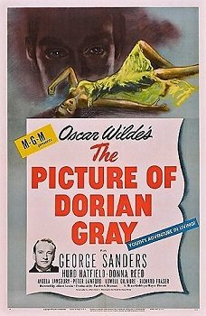

THE STANFORD THEATRE
Now Showing
·
Upcoming
·
Past
·
Search
June 20 - September 8, 2015
Summer 2015: Forty Classics from the Golden Age, including Kurosawa in August
23 bills
June 20 - 23
Roman Holiday (1953)
118 min
The Prisoner of Zenda (1937)
101 min
June 24 - 26
A Tale of Two Cities (1935)
120 min
If I Were King (1938)
101 min
June 27 - 30
The Little Foxes (1941)
116 min
The Letter (1940)
95 min
July 1 - 3
The Old Dark House (1932)
70 min
Dracula (1931)
75 min
July 4 - 7
Three Coins in the Fountain (1954)
102 min
An American in Paris (1951)
108 min
July 8 - 10
Lady Hamilton <aka> That Hamilton Woman (1941)
108 min
Green for Danger (1946)
91 min
July 11 - 14
Sabrina (1954)
113 min
Beat the Devil (1953)
89 min
July 15 - 17
Mr. Skeffington (1944)
127 min
Of Human Bondage (1934)
83 min
July 18 - 21
To Kill a Mockingbird (1962)
129 min
Witness for the Prosecution (1957)
116 min
July 22 - 24
Father of the Bride (1950)
92 min
Scarlet Street (1945)
103 min
July 25 - 28
My Fair Lady (1964)
171 min
July 29 - 31
Winchester '73 (1950)
92 min
The Far Country (1954)
97 min
August 1 - 4
Seven Samurai (1954)
207 min
August 5 - 7
Ikiru (1952)
143 min
August 8 - 11
Yojimbo (1961)
110 min
Stray Dog (1949)
122 min
August 12 - 14
The Bad Sleep Well (1960)
151 min
August 15 - 18
Rashomon (1950)
88 min
Throne of Blood (1957)
105 min
August 19 - 21
The Hidden Fortress (1958)
139 min
August 22 - 25
Forbidden Planet (1956)
99 min
The Time Machine (1960)
99 min
August 26 - 28
The Importance of Being Earnest (1952)
95 min

The Picture of Dorian Gray (1945)
110 min
August 29 - September 1
War and Peace (1956)
208 min
September 2 - 4
Bells Are Ringing (1960)
127 min
It Should Happen to You (1954)
86 min
September 5 - 8
Anastasia (1956)
105 min
Archived
•
StanfordTheatre.org Original